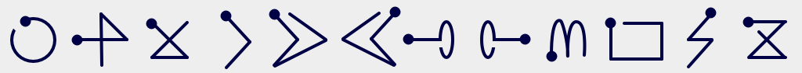

Select
Add
Remove
Play/Pause
Forward
Back
Louder
Quieter
Mute
Resize
Faster
Slower

Click and drag to draw gestures. Gestures must be drawn starting from the dot. Gestures affect the video that was clicked when starting the gesture. If the select gesture is used then the next gesture will affect all videos. Volume starts at max and changes in 25% increments. Seeking forward and back goes in 10 second increments. Speeding up or slowing down goes in 25% increments.